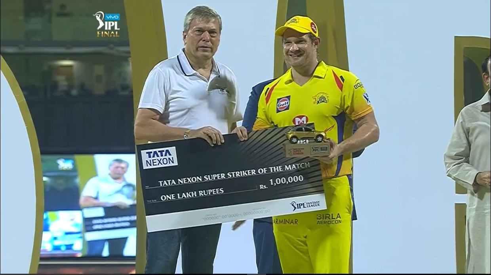
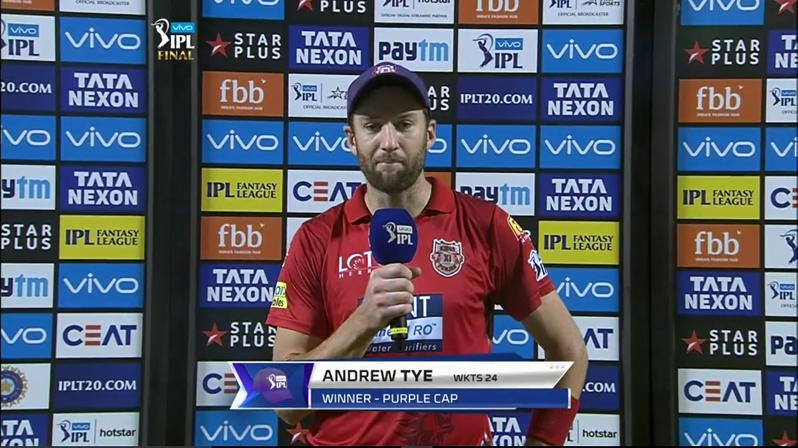

Go Back!
Match Rewards
League Matches – Man of the Match (RS 1 Lakh prize money per match & trophy)
The Man of the Match will be chosen by members of the television commentary team covering the match. A trophy and a cheque for RS 1 Lakh will be presented by either a franchise owner and/or a representative of a franchise principal sponsor to the Man of the Match; no product may be given unless the franchise principal sponsor is also a central sponsor.
Playoffs – Man of the Match (RS 5 Lakh prize money per match & trophy)
The Man of the Match will be chosen by members of the television commentary team covering the match. A trophy and a cheque for RS 5 Lakh will be awarded by BCCI to the Man of the Match in each of the Playoffs.
VIVO Perfect Catch of the Match (RS 1 Lakh prize money per match, trophy and a VIVO phone)
A cheque of RS 1 Lakh, trophy and a VIVO phone will be awarded by VIVO to the player who takes the best catch in each match as selected by the television commentators.
TATA Nexon Super Striker of the Match (RS 1 Lakh prize money per match & trophy)
A cheque of RS 1 Lakh and a trophy will be awarded by TATA Nexon to the player who has the highest batting strike rate in a match. To be eligible for the award, the player must have faced a minimum of 6 balls and scored a minimum of 15 runs per match.
FBB Stylish Player of the Match (RS 1 Lakh prize money per match & trophy)
A cheque of RS 1 Lakh and a trophy will be provided by FBB to the Stylish Player of the Match. The most stylish player of the match will be selected by the commentary panel. They will award points to players based on the combination of performance and style (confidence, appearance, stroke play, ability to remain cool/calm under pressure, attitude, etc.).
Star Plus Nayi Soch Award (RS 1 Lakh prize money per match & trophy)
A cheque of Rs.1 Lakh and a trophy will be provided by Star Plus to the player who had the most innovative moment in the match. The commentary panel will select the Star Plus Nayi Soch Award winner for the match. The winner will be picked on the basis of innovation/ different thinking in captaincy, innovation/ different thinking in batting and bowling, innovation/ different thinking in fielding and any other incident in the match that has elements of unique thinking involved.
Orange Cap
The Orange Cap will be worn while fielding by the batsman who has scored the most runs in the league (including the Playoffs) during the season to date. It is first awarded once each team has played at least one match and then changes hands when another batsman becomes the highest run scorer in the league to date. The Orange Cap is presented to the batsman at the end of the innings in which he achieves this feat (either at one of the flash interviews or at the post-match presentation). In the circumstance where two or more batsmen have scored the same number of runs during the season to date, the Orange Cap will be retained or awarded, as appropriate, to the batsman (of those who are tied) who has the higher strike rate during the season to date.
Purple Cap
The Purple Cap will be worn while fielding by the bowler who has taken the most wickets in the league (including the Playoffs) during the season to date. It is first awarded once each team has played at least one match and then changes hands when another bowler becomes the highest wicket taker in the league to date. The Purple Cap is presented to the bowler at the end of the innings in which he achieves this feat (either at one of the flash interviews or at the post-match presentation). In the circumstance where two or more bowlers have taken the same number of wickets during the season to date, the Purple Cap will be retained or awarded, as appropriate, to the bowler (of those who are tied) who has the lowest economy rate during the season to date.
SEASON AWARDS
Pitch and Ground Awards (RS 50 Lakh prize money and trophy for grounds that have hosted 7 or more matches; RS 25 Lakh prize money and trophy for grounds that have hosted less than 7 matches)
These two awards will be given by BCCI to the State Associations whose grounds are ranked the best by the IPL Match Referees and Umpires over the course of the IPL season. A pitch and outfield evaluation will be completed after each match by the IPL Match Referee in consultation with the on-field and 3rd Umpires and will consider the criteria listed below. In the event of a tie prize money will be shared. Points are awarded per match based on the following criteria;
- Did the pitch play the same throughout the match for both innings?
- Did the pitch have good pace and ball carry?
- Was the bounce of the pitch consistent?
- Was the amount of lateral seam movement on offer fair?
- Was the amount of spin on offer fair (i.e. not excessive)?
- Overall evaluation of the pitch and outfield.
VIVO Perfect Catch of the Season (RS 10 Lakh prize money, trophy and a VIVO Phone)
A cheque of RS 10 Lakh, trophy and a VIVO phone will be awarded by VIVO to the player who takes the best catch of the season as selected by a combination of a public vote on www.iplt20.com and the choice of the television commentators.
TATA Nexon Super Striker of the Season (Trophy and a TATA Nexon car)
A trophy and a TATA Nexon car will be awarded by TATA Motors to the player who has the highest batting strike rate of the season. To be eligible for the award, the player must have played 7 matches in the season, faced a minimum of 42 balls and scored a minimum of 105 runs.
FBB Stylish Player of the Season (RS 10 Lakh prize money and trophy)
A cheque of RS 10 lakh and a trophy will be awarded by FBB to the player who has won the FBB Stylish Player of the Match award the most number of times. If there is a tie between, the commentator’s panel will decide the winner.
Star Plus Nayi Soch Season Award (RS 10 Lakh prize money and trophy)
A cheque of Rs. 10 lakh and a trophy will be awarded by Star Plus to a player who has been selected from a shortlist by the commentators from the match award winners.
Emerging Player Award (RS 10 Lakh prize money)
This award will be given by BCCI to the player who has best demonstrated, through his performances during the season, his potential to be a future star of international cricket. In order to be eligible for the Emerging Player Award, a player must meet all four of the following criteria:
- be born after 1 April 1992;
- have played 5 or less Test matches;
- have played in 25 or less IPL matches (as of the start of the season); and
- have not previously won the Emerging Player Award. The winner will be selected by a combination of a public vote on www.iplt20.com and the choice of the television commentators.
Paytm Fair Play Award (Trophy)
This will be awarded to the team judged by the Umpires, over the course of the league and playoff matches during the season, to have best upheld the spirit of the game in their matches. The Umpires will rate each of the two teams in each match based on the following criteria:
- upholding spirit of the game during the match;
- showing respect to the opposition;
- showing respect for the laws of the game; and
- showing respect to the Umpires.
Additional credit will be given for examples of exceptional behaviour in line with the above criteria (for example a fielder signalling that a ball had not been caught cleanly or a batsman walking without waiting for the Umpire’s decision).
Orange Cap (RS 10 Lakh prize money & trophy)
This will be awarded by BCCI to the leading run scorer of the season (including the Playoffs). In the event of a tie, the Orange Cap will be awarded to the player (of those tied) who scored the most runs during the Playoff matches. If this does not break the tie, the Orange Cap will be awarded to the player (of those with the most runs in Playoff matches) with the highest strike rate over the course of the season.
2008 – Shaun Marsh – King’s XI Punjab
2009 – Matthew Hayden – Chennai Super Kings
2010 – Sachin Tendulkar – Mumbai Indians
2011 – Chris Gayle – Royal Challengers Bangalore
2012 – Chris Gayle – Royal Challengers Bangalore
2013 – Michael Hussey – Chennai Super Kings
2014 – Robin Uthappa – Kolkata Knight Riders
2015 – David Warner – Sunrisers Hyderabad
2016 – Virat Kohli – Royal Challengers Bangalore
2017 – David Warner – Sunrisers Hyderabad
Purple Cap (RS 10 Lakh prize money & trophy)
This will be awarded by BCCI to the leading wicket taker of the season (including the Playoffs). In the event of a tie, the Purple Cap will be awarded to the player (of those tied) who took the most wickets during the Playoff matches. If this does not break the tie, the Purple Cap will be awarded to the player (of those with the most wickets during the Playoff matches) with the lowest economy rate over the course of the season.
2008 – Sohail Tanvir – Rajasthan Royals
2009 – R P Singh – Deccan Chargers
2010 – Pragyan Ojha – Deccan Chargers
2011 – Lasith Malinga – Mumbai Indians
2012 – Morne Morkel – Delhi Daredevils
2013 – Dwayne Bravo – Chennai Super Kings
2014 – Mohit Sharma – Chennai Super Kings
2015 – Dwayne Bravo – Chennai Super Kings
2016 – Bhuvneshwar Kumar – Sunrisers Hyderabad
2017 – Bhuvneshwar Kumar – Sunrisers Hyderabad
Most Valuable Player (RS 10 Lakh prize money & trophy)
A cheque and trophy will be awarded by BCCI to the player who has earned the most MVP points during the season (including the Playoff matches). MVP points are earned by hitting fours and sixes, taking wickets and bowling dot balls, taking catches and making stumping’s.
2008 – Shane Watson – Rajasthan Royals
2009 – Adam Gilchrist – Deccan Chargers
2010 – Jacques Kallis - Royal Challengers Bangalore
2011 – Chris Gayle - Royal Challengers Bangalore
2012 – Chris Gayle - Royal Challengers Bangalore
2013 – Shane Watson – Rajasthan Royals
2014 – Glenn Maxwell – Kings XI Punjab
2015 – Andre Russell – Kolkata Knight Riders
2016 – Virat Kohli – Royal Challengers Bangalore
2017 – Ben Stokes – Rising Pune Supergiant
Match Officials (Mementos)
Mementos are awarded to the four Umpires and the Match Referee who officiate in the Final.
Runners Up (Mementos)
Mementos are awarded to members of the playing squad and support staff of the team that loses the Final.
Runner Up Cheque (RS 12.5 Crore prize money)
Cheque presented to the runner up team captain.
Winners (Mementos)
Mementos are awarded to members of the playing squad and support staff of the team that wins the Final.
Winners Mementos and Cheque (RS 20 Crore prize money)
Cheque presented to the winning team captain.
VIVO IPL Trophy
This will be awarded to the winning team of VIVO IPL 2018.
2008 – Rajasthan Royals
2009 – Deccan Chargers
2010 – Chennai Super Kings
2011 – Chennai Super Kings
2012 – Kolkata Knight Riders
2013 – Mumbai Indians
2014 – Kolkata Knight Riders
2015 – Mumbai Indians
2016 – Sunrisers Hyderabad
2017 – Mumbai Indians
2018 Champion
Chennai became Super King After Two Years
Click here to watch the winning moment
MAIN AWARDS GIVEN IN FINAL MATCH OF VIVO IPL 2018
Man of The Match
Shane Watson
Click here to Watch Man of the Match Ceremony in HD
Vivo perfect catch of the match
Suresh Raina
Click here to Watch Perfect Catch Ceremony in HD
Tata Nexon Super Striker Of the Match

Shane Watson
Click here to Watch Super striker Ceremony in HD
FBB Stylish Player Of the Match
Lungi Ngidi
Click here to Watch Stylish Player Ceremony in HD
Star Plus Nayi Soch Award

Mahendra Singh Dhoni
Click here to Watch Star Plus Nayi Soch Award Ceremony in HD
Purple Cap

Andrew Tye
Click here for full Ceremony
Orange Cap Cap
Kane Williamson
Click here for full Ceremony
Season Awards
Pitch And Ground Awards
It goes to:
- Cricket Association of Bengal
Click here for full Ceremony
- Punjab Cricket Association
Click here for full Ceremony
Vivo Perfect Catch Of the Season
Trent Boult
Click here to Watch Ceremony
Tata Nexon Super Striker of the Season

Sunil Naraine
Click here to Watch Ceremony
FBB Stylish Player of the Season

Rishabh Pant
Click here to Watch Ceremony
Star Plus Nayi Soch Season Award

Mahendra Singh Dhoni
Click here to Watch Ceremony
Emerging Player Award
Rishabh Pant
Click here to Watch Ceremony
Paytm Fair Play Award
Mumbai Indians
Click here to Watch Ceremony
Most Valuable Player
Sunil Naraine
Click here to Watch Ceremony